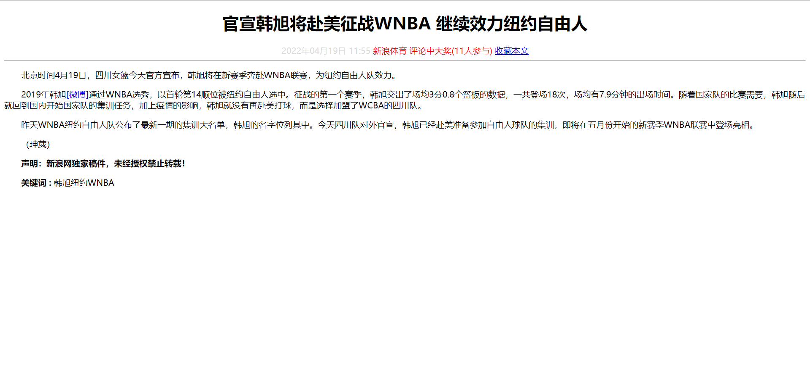

1.文本样式
文本样式包括文本的字体、字号、颜色等文字相关的属性。CSS中通过字体样式完成对字体的设置。
2.font字体
| 属性 | 表示 | 注意点 |
|---|---|---|
| font-size | 字号 | 我们通常用的单位是px 像素，一定要跟上单位 |
| font-family | 字体 | 实际工作中按照团队约定来写字体 |
| font-weight | 字体粗细 | 记住加粗是 700 或者 bold 、不加粗 是 normal 或者 400 ；记住数字不要跟单位 |
| font-style | 字体样式 | 记住倾斜是 italic 不倾斜 是 normal 工作中我们最常用 normal |
| font | 字体连写 | 1. 字体连写是有顺序的 不能随意换位置 2. 其中字号 和 字体 必须同时出现 |
2.1 font-size
font-size属性用于设置字号。
1
2
3
p {
font-size:20px;
}
| 绝对长度 | 说明 |
|---|---|
| in | 英寸 |
| cm | 厘米 |
| mm | 毫米 |
| pt | 点 |
可以使用相对长度单位，也可以使用绝对长度单位。
相对长度单位比较常用，推荐使用像素单位px，绝对长度单位使用较少。
| 相对长度 | 说明 |
|---|---|
| em | 相对于当前对象内文本的字体尺寸 |
| px | 像素，最常用，建议使用 |
px像素（Pixel），像素px是相对于显示器屏幕分辨率而言的。
em，相对于当前对象内文本的字体尺寸,多理解父级设定font-size的尺寸。.一旦父级元素有设定字体大小, em前面数值x就相当于父级元素字体乘以x%
任意浏览器的默认字体高都是16px。所有未经调整的浏览器都符合: 1em=16px。那么12px=0.75em,10px=0.625em。
为了换算方便，可以在父级元素定义style="font-size:62.5%;"，这样就是1em = 10px
1
2
3
4
5
6
7
8
9
10
11
12
13
14
15
16
17
<body style="font-size:62.5%;">
<div style="width:200px; height:300px; margin-top:20px; border:1px solid #f00; font-size:2em; ">
这里的文字是第一级的大小
<div style="font-size:0.9em;">
这里的文字是第二级的,相对第一级x90%;
<p style="font-size:0.8em;">这里的文字是第三级的,相对第二级x80%</p>
</div>
</div>
<div style="width:200px; height:300px; margin-top:20px; border:1px solid #f00; font-size:20px; ">
这里的文字是第一级的大小
<div style="font-size:18px;">
这里的文字是第二级的
<p style="font-size:14px;">这里的文字是第三级的</p>
</div>
</div>
</body>
注意：
- 工作中基本就用
px，其他单位很少使用 - 谷歌浏览器默认的文字大小为
16px - 不同浏览器可能默认显示的字号大小不一致，我们尽量给一个明确值大小，不要默认大小。
一般给body指定整个页面文字的大小
2.2 font-family
font-family属性用于设置字体。
1
2
3
4
5
p{ font-family:"微软雅黑";}
/* 可以同时指定多个字体，中间以逗号隔开，表示如果浏览器不支持第一个字体，则会尝试下一个，直到找到合适的字体.
如果都没有，则以我们电脑默认的字体为准 */
p{font-family: Arial,"Microsoft Yahei", "微软雅黑";}
| 字体名称 | 英文名称 | Unicode 编码 |
|---|---|---|
| 宋体 | SimSun | \5B8B\4F53 |
| 新宋体 | NSimSun | \65B0\5B8B\4F53 |
| 黑体 | SimHei | \9ED1\4F53 |
| 微软雅黑 | Microsoft YaHei | \5FAE\8F6F\96C5\9ED1 |
| 楷体_GB2312 | KaiTi_GB2312 | \6977\4F53_GB2312 |
| 隶书 | LiSu | \96B6\4E66 |
| 幼园 | YouYuan | \5E7C\5706 |
| 华文细黑 | STXihei | \534E\6587\7EC6\9ED1 |
| 细明体 | MingLiU | \7EC6\660E\4F53 |
| 新细明体 | PMingLiU | \65B0\7EC6\660E\4F53 |
注意：
- 各种字体之间必须使用英文状态下的逗号隔开
- 中文字体需要加英文状态下的引号，英文字体一般不需要加引号。当需要设置英文字体时，
英文字体名必须位于中文字体名之前 - 如果字体名中包含
空格、#、$等符号，则该字体必须加英文状态下的单引号或双引号，例如font-family: "Times New Roman" - 尽量使用系统默认字体，保证在任何用户的浏览器中都能正确显示
为什么使用 Unicode字体?
1 2
- 在 CSS 中设置字体名称，直接写中文是可以的。但是在文件编码（GB2312、UTF-8 等）不匹配时会产生乱码的错误 - xp 系统不支持 类似微软雅黑的中文
解决：
1 2 3 4
- 方案一： 你可以使用英文来替代。 比如font-family:"Microsoft Yahei" - 方案二： 在 CSS 直接使用 Unicode 编码来写字体名称可以避免这些错误。使用 Unicode 写中文字体名称，浏览器是可以正确的解析的 font-family: "\5FAE\8F6F\96C5\9ED1"; /*表示设置字体为“微软雅黑”。*/
2.3 font-weight
在HTML中如何将字体加粗我们可以用标签 b 和 strong 标签是文本加粗。在CSS中，使用 font-weight实现。
| 属性值 | 描述 |
|---|---|
| normal | 默认值（不加粗的） |
| bold | 定义粗体（加粗的） |
| 100~900 | 400 等同于 normal，而 700 等同于 bold 我们重点记住这句话 |
提倡： 用数字来表示加粗和不加粗
2.4 font-style
这个功能对应于HTML中的倾斜和正常字体，用的较少。
| 属性 | 作用 |
|---|---|
| normal | 默认值，浏览器会显示标准的字体样式 font-style: normal; |
| italic | 浏览器会显示斜体的字体样式 |
平时我们很少给文字加斜体，反而喜欢给斜体标签（em，i）改为普通模式。
2.5 font
font属性用于对字体样式进行综合设置。
1
2
3
选择器 {
font: font-style font-weight font-size/line-height font-family;
}
注意：
- 使用font属性时，必须按上面语法格式中的顺序书写，不能更换顺序，各个属性以空格隔开。
- 其中不需要设置的属性可以省略（取默认值），但必须保留font-size和font-family属性，否则font属性将不起作用。
3.外观属性
| 属性 | 表示 | 注意点 |
|---|---|---|
| color | 颜色 | 我们通常用 十六进制 比如 而且是简写形式 #fff |
| line-height | 行高 | 控制行与行之间的距离 |
| text-align | 水平对齐 | 可以设定文字水平的对齐方式 |
| text-indent | 首行缩进 | 通常我们用于段落首行缩进2个字的距离 text-indent: 2em; |
| text-decoration | 文本修饰 | 记住 添加 下划线 underline 取消下划线 none |
3.1 color
color属性用于定义文本的颜色。
| 表示表示 | 属性值 |
|---|---|
| 预定义的颜色值 | red，green，blue，还有我们的御用色 pink |
| RGB代码 | rgb(255,0,0)或rgb(100%,0%,0%) |
| 十六进制 | #FF0000，#FF6600，#29D794 |
我们实际工作中， 用 16进制的写法是最多的，而且我们更喜欢简写方式比如 #f00 代表红色。
1
2
3
p {
color:#f00;
}
3.2 text-align
text-align属性用于设置文本内容的水平对齐，相当于html中的align对齐属性。
| 属性 | 解释 |
|---|---|
| left | 左对齐（默认值） |
| right | 右对齐 |
| center | 居中对齐 |
注意：
text-align是让盒子里面的内容左对齐、右对齐和水平居中， 而不是让盒子居中对齐
3.3 line-height
line-height属性用于设置行间距，即字符的垂直间距，一般称为行高。line-height常用的属性值单位有三种，分别为像素px，相对值em和百分比%，实际工作中使用最多的是像素px。
1
2
3
/*一般情况下，行距比字号大7~8像素左右就可以了。*/
line-height: 24px;

行高 = 上距离 + 内容高度 + 下距离

- 如果
行高 = 文字高度， 文字会 垂直居中 - 如果
行高 > 文字高度，文字会 偏下 - 如果
行高<高度， 文字会 偏上
3.4 text-indent
text-indent属性用于设置首行文本缩进，其属性值可为不同单位的数值、em字符宽度的倍数、或相对于浏览器窗口宽度的百分比%，允许使用负值
1
2
3
4
5
6
7
/*1em 就是一个字的宽度 如果是汉字的段落， 1em 就是一个汉字的宽度*/
p {
/*行间距*/
line-height: 25px;
/*首行缩进2个字 em 1个em 就是1个字的大小*/
text-indent: 2em;
}
3.5 text-decoration
text-decoration 通常用于给链接修改装饰效果。
| 值 | 描述 |
|---|---|
| none | 默认。定义标准的文本。 取消下划线（最常用） |
| underline | 定义文本下的一条线。下划线 也是我们链接自带的（常用） |
| overline | 定义文本上的一条线。（不用） |
| line-through | 定义穿过文本下的一条线。（不常用） |

4.背景
案例中，背景为默认的白色，过于单调。通过css背景属性，给页面元素添加背景样式，增强视觉效果，满足开发所需。
| 属性 | 作用 | 值 |
|---|---|---|
| background-color | 背景颜色 | 预定义的颜色值/十六进制/RGB代码 |
| background-image | 背景图片 | url(图片路径) |
| background-repeat | 是否平铺 | repeat/no-repeat/repeat-x/repeat-y |
| background-position | 背景位置 | length/position 分别是x 和 y坐标， 切记 如果有 精确数值单位，则必须按照先X 后Y 的写法 |
| background-attachment | 背景固定还是滚动 | scroll/fixed |
| 背景简写 | 更简单 | 背景颜色 背景图片地址 背景平铺 背景滚动 背景位置; 他们没有顺序 |
| 背景透明 | 让盒子半透明 | background: rgba(0,0,0,0.3); 后面必须是 4个值 |
4.1 background-color
设置背景颜色。
1
2
/* 默认的值是 transparent 透明的 */
background-color:颜色值;
4.2 background-image
设置背景图片。
| 参数 | 作用 |
|---|---|
| none | 无背景图（默认的） |
| url | 使用绝对或相对地址指定背景图像 |
1
2
background-image : none | url (url)
background-image : url(images/demo.png); /* 背景图片后面的地址，url不要加引号*/
4.3 background-repeat
设置图片单张无法覆盖背景大小时，图片的平铺方式。
| 参数 | 作用 |
|---|---|
| repeat | 背景图像在纵向和横向上平铺（默认的） |
| no-repeat | 背景图像不平铺 |
| repeat-x | 背景图像在横向上平铺 |
| repeat-y | 背景图像在纵向平铺 |
1
background-repeat : repeat | no-repeat | repeat-x | repeat-y
4.4 background-position
背景图片位置设置。
| 参数 | 值 |
|---|---|
| length | 百分数 | 由浮点数字和单位标识符组成的长度值 |
| position | top | center | bottom | left | center | right 方位名词 |
1
2
3
background-position : length || length
background-position : position || position
注意：
- 必须先指定
background-image属性 - position 后面是x坐标和y坐标。 可以使用方位名词或者 精确单位。
- 如果指定两个值，两个值都是方位名字，则两个值前后顺序无关，比如
left top和top left效果一致 - 如果只指定了一个方位名词，另一个值默认居中对齐。
- 如果position 后面是精确坐标， 那么第一个肯定是
x第二的一定是y - 如果只指定一个数值,那该数值一定是
x坐标，另一个默认垂直居中 - 如果指定的两个值是 精确单位和方位名字混合使用，则第一个值是x坐标，第二个值是y坐标
4.5 background-attachment
背景附着就是解释背景是滚动的还是固定的。
| 参数 | 作用 |
|---|---|
| scroll | 背景图像是随对象内容滚动 |
| fixed | 背景图像固定 |
1
background-attachment : scroll | fixed
2.6 background
background：属性的值的书写顺序官方并没有强制标准的。为了可读性，建议大家如下写：
1
2
background: 背景颜色 背景图片地址 背景平铺 背景滚动 背景位置;
background: transparent url(image.jpg) repeat-y scroll center top ;
设置背景透明度
1
background: rgba(0, 0, 0, 0.3);
- 最后一个参数是alpha 透明度 取值范围 0~1之间
- 我们习惯把0.3 的 0 省略掉 这样写 background: rgba(0, 0, 0, .3);
- 注意： 背景半透明是指盒子背景半透明， 盒子里面的内容不受影响
- 因为是CSS3 ，所以 低于 ie9 的版本是不支持的。
5.注意
1.input的边框样式
要设置input输入框的边框样式，边框颜色outline-color: 颜色;边框宽度outline-width : 4px;清除外边距样式：outline-style: none;
1
2
3
4
5
6
7
8
9
10
11
12
13
14
15
16
17
18
19
20
21
22
23
24
<!DOCTYPE html>
<html lang="en">
<head>
<meta charset="UTF-8">
<title>input外边距</title>
<style>
* {
margin: 10px auto;
}
div {
width: 1000px;
}
/* 修改外边框颜色 */
input {
outline-color: brown;
}
</style>
</head>
<body>
<div>
<input type="text" value="请输入内容">
</div>
</body>
</html>
参考链接：